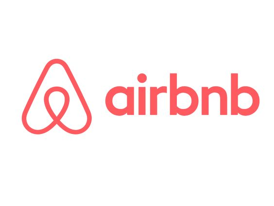

January 18, 2024
In response to the unprecedented challenges posed by the global pandemic, this project aims to conduct a comprehensive analysis of pandemic data using SQL. The primary focus is on cleaning, sorting, and transforming raw data to derive meaningful insights. Furthermore, the project incorporates the creation of visually engaging and informative data visualizations using Tableau.

In this project, I undertake a comprehensive analysis of bike sales data for a business specializing in bike sales. The primary objectives include cleaning and sorting the data in Excel and creating visually compelling visualizations to derive meaningful insights.
This project focuses on the in-depth analysis of employee absenteeism within a company. The project utilizes a combination of SQL for data cleaning and sorting, Excel for further data refinement, and PowerBI for creating insightful visualizations. The aim is to uncover patterns, identify causes of absenteeism, and present actionable insights for HR and management.
This project revolves around a comprehensive analysis of employee data, specifically focusing on professional positions within a company. The project employs SQL for data cleaning and sorting, Excel for further data refinement, and PowerBI for crafting visualizations that offer insights into the distribution and characteristics of different professional roles.

This project is focused on analyzing the diversity of customers visiting a mall and understanding their spending behaviors. The analysis encompasses data cleaning, sorting, and visualization, employing Jupyter Notebook and Python for its implementation. The ultimate goal is to gain insights into customer segments and their respective spending patterns.

This project focuses on identifying and analyzing advantageous zip codes for potential Airbnb property investments. Through thorough data analysis, the project aims to uncover insights into key factors influencing the profitability and popularity of Airbnb listings within different zip codes.
This project showcases a compilation of diverse programs developed using the Python programming language. Ranging from small utility scripts to more complex applications, the portfolio aims to demonstrate versatility, problem-solving skills, and proficiency in Python development.